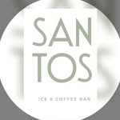

Kaffee
Sauber extrahierter Espresso, Cappuccino mit feiner Textur und ein ruhiger Platz für den ersten Kaffee des Tages.

Santos ICE & COFFEE BARLudwigsburg, Kirchstraße 18
Santos verbindet cremiges Eis, knusprige Pastel de Nata, Cappuccino und Spritz-Getränke zu einer Adresse, die tagsüber leicht wirkt und abends urban bleibt.
Wechselnde Eissorten, milchige Kaffees und ein Tresen, an dem sich Nachmittag und Aperitif treffen.
16 Beiträge, lokale Community und echte Thekenmomente.
Das Gefühl
Sauber extrahierter Espresso, Cappuccino mit feiner Textur und ein ruhiger Platz für den ersten Kaffee des Tages.
Kugel-Eis als feste Hauptrolle statt Nebenprodukt. Schnell, frisch und sichtbar inszeniert.
Wenn der Tag kippt, übernimmt der Spritz. Leicht, unkompliziert und passend zum Stadtabend.
Highlights
Blättrig, karamellisiert und genau richtig zu einem kurzen Espresso.
Cremig, ruhig und ohne unnötige Show. Der Klassiker bleibt der Maßstab.
Kugelweise serviert, spontan gewählt und als kleine Pause mitten in der Stadt gedacht.
Für den späteren Nachmittag: leichte Drinks, Thekenatmosphäre und ein sauberer Übergang in den Abend.
Schneller Überblick
Die Website ist bewusst wie eine kompakte Visitenkarte aufgebaut: klare Aussage, markante Materialität und direkte Wege zu Standort, Kontakt und Socials.
Besuch
Kirchstraße 18
71634 Ludwigsburg
Espresso am Vormittag, Eis am Nachmittag, Spritz am Abend.
Instagram: @santos_iceandcoffeebar